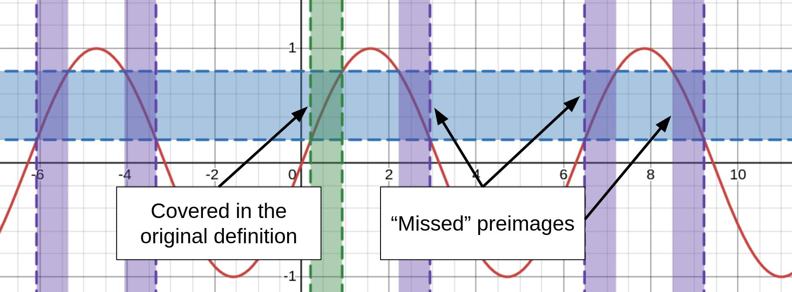
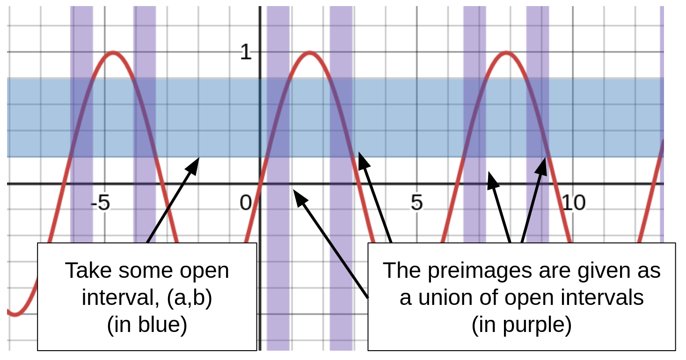

I took my first topology module this year and have enjoyed it quite a lot. That being said, one of the first things that caught me unawares was how topologists define continuity. Since topology is all about properties invariant under bijective continuous maps, I wanted to inspect this more thoroughly.
Specifically, topologists use the following definition: A function $f:X \to Y$ is continuous if for all open sets in $Y$, its preimage $f^{-1}(x)$ is also open.
This was quite an odd way of looking at it - why do we not just use the same definition that we have used in previous real analysis courses? Learning why this made sense helped me understand far more deeply what topology is about, and how topological invariants relate with one another.
Before we do anything else, let's remind ourselves of what a continuous function is as the way we would have been taught in a real analysis class:
A function $f:X \to Y$ is continuous if for all points $a \in X$, $\lim_{x \to a}f(x) = f(a)$.
This definition is fine (it's certainly well defined for real functions), but a limit-based definition runs into a few issues:
It's only well-defined for one-dimensional real functions of real variables. Even if we ignore the existence of some weird topological spaces , we still need to redefine continuity on multivariable functions, or for complex analysis.
In topology, limits are not unique. Some topological spaces have sequences that do not converge, some converge on one point, some converge on more than one point and some converge on the entire domain. A clear cut solution for continuity cannot rely on a limit-based definition.
All in all, it makes theorem proving using continuity far more difficult than it should be. This is a problem, since the aim of topology is to find invariant properties under continuity.
It is clear that this definition does not suffice for our purposes. But how do we find a better one?
One thing that every topological space has is open subsets; in fact, the set of open subsets of a set is how we describe the topology on that set. This gives us an idea for how we can create a new definition. Here are some examples of sets and metrics we describe on them: 1
| Set | Example metric |
|---|---|
| $\mathbb{R}^n$ | Euclidean distance: $|x-y|$ |
| Vector space | $|x-y|$ 2 |
| Graph | Shortest route between two vertices |
| Continuous bounded functions | The supremum metric: $\sup|f(x) - g(x)|$ |
From now on we will work in $\mathbb{R}$, though the reader is welcome to apply these techniques to definitions they have learnt in a multivariable or complex analysis class. To derive our new definition, we introduce the following set:
$$ B_{\epsilon}(a) := {x \in \mathbb{R}: |x-a| < \epsilon}, $$
where $\epsilon > 0$. This is known as the open ball of radius $\epsilon$ centred at $a$ (or an open interval), and will be key to our derivation. In particular, we remark that any open set (in $\mathbb{R}$ or otherwise) is made up of a composition of open balls. 3 In particular:
We now prove that a function is continuous. We recall the $\epsilon-\delta$ definition of continuity:
$$
f:X \subseteq \mathbb{R} \to \mathbb{R} \text{ continuous} \iff \forall a \in X \forall \epsilon > 0 \exists \delta >0:|x-a| < \delta \implies |f(x)-f(a)| < \epsilon
$$
Or equivalently,
$$ f:X \subseteq \mathbb{R} \to \mathbb{R} \text{ continuous} \iff \forall a \in X \forall \epsilon > 0 \exists \delta > 0: x \in B_{\delta}(a) \implies f(x) \in B_{\epsilon}(f(a)) $$
However, just applying the definition is not enough to end up with the definition we held at the start. To find this, we go through the process of how we may prove a function is continuous at a point - say, $\sin(x)$:
Assuming $a \in [-\pi,\pi]$, take some ball $B_{\epsilon}(\sin(a))$. This is given by $(\sin(a) - \epsilon,\sin(a) + \epsilon)$. Taking care to make sure the inverse is well defined, we have the local preimage map $$(\max{\sin^{-1}(\sin(a)-\epsilon),-1},\min{\sin^{-1}(\sin(a) + \epsilon)})$$ which fulfills the requirement.
This is the maximal value of $\delta$ - so any value of $\delta$ between 0 and the value given will work. What is important to remember is that we determined the open ball in the domain based on the ball in the codomain, which is what makes the forward implication work.
Note here the use of the word local when describing the map. This is because while the inverse of $\sin$ maps to $[-\pi,\pi]$, the preimage extends out infinitely:

We would like our notion of continuity to capture these missed values. Plus, with a periodic or bounded function like the sine function, this comes as a huge bonus - if we can find some way of extending the definition to all preimages, we can simply test that the solution works locally and check it for the possible open balls within the codomain.
Recall what I said at the start of the previous section -- that every open set can be made of a union of open balls. Since every open ball in the codomain has a corresponding open ball in the domain, we now take their union, which we now see is also an open set:

Feel free to play about with some preimages of $\sin$ here.
This preimage has been determined by the codomain. What is left for us to do is:
For the first problem, we take any point $x$ in $f^{-1}(a,b)$. Since $f$ is continuous, we can form an open ball around this that maps to some subset of $(a,b)$, and we are done.
For the second problem, we recall (for the final time) that an open set is a union of open balls and we are done.
If this derivation has gone over your head, I'd still like to show you how much nicer of a method this is than the traditional definition. Consider the function $f:\mathbb{R} \to \mathbb{R}$ given by $f(x) = x^2$. For some $0<a<b$, we can consider the preimage map to be given by $$f^{-1}(a,b) = (-\sqrt{b}, -\sqrt{a}) \cup (\sqrt{a},\sqrt{b}). $$
Each of these intervals is an open ball, so the whole set is open. If we take $a<b\leq0$, then $f^{-1}(a,b) = \emptyset$, and taking $a<0$ and $b>0$, then $f^{-1}(a,b) = (-\sqrt{b},\sqrt{b})$. Each of these preimages is open, and so the function is continuous. Far easier to prove than the $\epsilon-\delta$ definition.
I hope this was an enjoyable read! Feel free to get in touch with me on Mastodon if you have any questions or you found anything confusing.
If you want to see some more fun examples of metrics on sets, you can do so here . ↩
Recall that $\mathbb{R}^n$ is a vector space, with the basis ${(1,0,\cdots, 0),\cdots(0,\cdots,0,1)}$. This may seem trivial, but it is crucial in areas such as functional analysis and differential topology, as most maps (including the derivative) are actually a linear map . ↩
To understand why this is the case, recall that an set is defined as open if for all elements in the set, you can construct some open ball around it. ↩